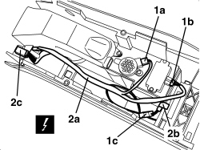

5505A68 CABLE LOOM FOR CONSOLE UNDER DASHBOARD AND/OR TUNNEL COVER - R.R. OR REPLACE
- Path
- Procedures > 55 ELECTRICAL EQUIPMENT > 5505 INSTRUMENT/GAUGE ELECTRICAL CIRCUITS > 5505A MULTI-FUNCTION COMPONENTS > 5505A68 CABLE LOOM FOR CONSOLE UNDER DASHBOARD AND/OR TUNNEL COVER - R.R. OR REPLACE
- Kind
- repair procedure (removal / refitting; the operation number is the code)
- Applies to
- all engines; all production periods
- Interactive page
- https://sloeber94.github.io/elrnDB-aBrrSpdr/en/#/946004052
Applies to: all engines; all production periods
 Removing
Removing
 Refitting
Refitting- Work on both sides.
Op. 7045A10 FRONT SEAT (ONE), LEFT OR RIGHT - R.R.
Op. 7050A22 REAR SEAT CUSHION - R+R
Op. 7065B14 ANCHORAGE ROD FOR (ONE) REAR SEAT BELT LEFT OR RIGHT - R.R.
Op. 7040L22 REAR COVER ON TUNNEL - R.R.
Op. 7040L37 GEAR LEVER TRIM - R.R
Op. 3380A44 HANDBRAKE/LINKAGE PROTECTION - R+R
Op. 7040L20 TUNNEL COVER - R.R
1. Disconnect the electrical connections (1a, 1b, 1c).
Description | Component |
|---|---|
PARKING SENSOR SPEAKER | |
TILT SENSOR | |
CENTRAL BOOT OPENING CONTROL SWITCH |
2. Remove the cable loom (2a) releasing the retaining band (2b) and the electrical connection (2c) from the console retainer.

Applies to: all engines; all production periods
Refitting
Removing- Check that the cable loom is not damaged.
- Position the cable loom, then attach the retaining band and the electrical connection to the console retainer.
- Secure the electrical connections.
Op. 7040L20 TUNNEL COVER - R.R
Op. 3380A44 HANDBRAKE/LINKAGE PROTECTION - R+R
Op. 7040L37 GEAR LEVER TRIM - R.R
Op. 7040L22 REAR COVER ON TUNNEL - R.R.
Op. 7065B14 ANCHORAGE ROD FOR (ONE) REAR SEAT BELT LEFT OR RIGHT - R.R.
Applies to: engines: 2.2 JTS, 3.2 JTS; all production periods; only with equipment: Spider
Removing
Refitting- Remove both seats.
Op. 7045A10 FRONT SEAT (ONE), LEFT OR RIGHT - R.R.
Op. 7040L37 GEAR LEVER TRIM - R.R
Op. 7040L23 TRIM ON TUNNEL COVER - R.R.
Op. 3380A44 HANDBRAKE/LINKAGE PROTECTION - R+R
Op. 7040H21 MOULDING ON PASSENGER COMPARTMENT REAR TRIM - R.R.
Op. 7040H22 PASSENGER COMPARTMENT REAR TRIM (SPIDER) - R.R.
Op. 7040L31 REAR ODDMENTS COMPARTMENT - R.R.
Op. 7040L51 REAR ODDMENTS COMPARTMENT SUPPORT - R.R.
Op. 7040L20 TUNNEL COVER - R.R
1. Disconnect the electrical connections (1a, 1b, 1c).
Description | Component |
|---|---|
PARKING SENSOR SPEAKER | |
TILT SENSOR | |
CENTRAL BOOT OPENING CONTROL SWITCH |
2. Remove the cable loom (2a) releasing the retaining band (2b) and the electrical connection (2c) from the console retainer.

Applies to: engines: 2.2 JTS, 3.2 JTS; all production periods; only with equipment: Spider
Refitting
Removing- Check that the cable loom is not damaged.
- Position the cable loom, then attach the retaining band and the electrical connection to the console retainer.
- Secure the electrical connections.
Op. 7040L20 TUNNEL COVER - R.R
Op. 7040L51 REAR ODDMENTS COMPARTMENT SUPPORT - R.R.
Op. 7040L31 REAR ODDMENTS COMPARTMENT - R.R.
Op. 7040H22 PASSENGER COMPARTMENT REAR TRIM (SPIDER) - R.R.
Op. 7040H21 MOULDING ON PASSENGER COMPARTMENT REAR TRIM - R.R.
Op. 3380A44 HANDBRAKE/LINKAGE PROTECTION - R+R
Op. 7040L23 TRIM ON TUNNEL COVER - R.R.
Topics linked from this page (15)
- 3380A44 HANDBRAKE/LINKAGE PROTECTION - R+R
- 7040H21 MOULDING ON PASSENGER COMPARTMENT REAR TRIM - R.R.
- 7040H22 PASSENGER COMPARTMENT REAR TRIM (SPIDER) - R.R.
- 7040L20 TUNNEL COVER - R.R
- 7040L22 REAR COVER ON TUNNEL - R.R.
- 7040L23 TRIM ON TUNNEL COVER - R.R.
- 7040L31 REAR ODDMENTS COMPARTMENT - R.R.
- 7040L37 GEAR LEVER TRIM - R.R
- 7040L51 REAR ODDMENTS COMPARTMENT SUPPORT - R.R.
- 7045A10 FRONT SEAT (ONE), LEFT OR RIGHT - R.R.
- 7050A22 REAR SEAT CUSHION - R+R
- 7065B14 ANCHORAGE ROD FOR (ONE) REAR SEAT BELT LEFT OR RIGHT - R.R.
- H033 BOOT CENTRAL OPENING SWITCH
- K063 ANTI-TILT SENSOR
- P044 PARKING SENSOR SPEAKER